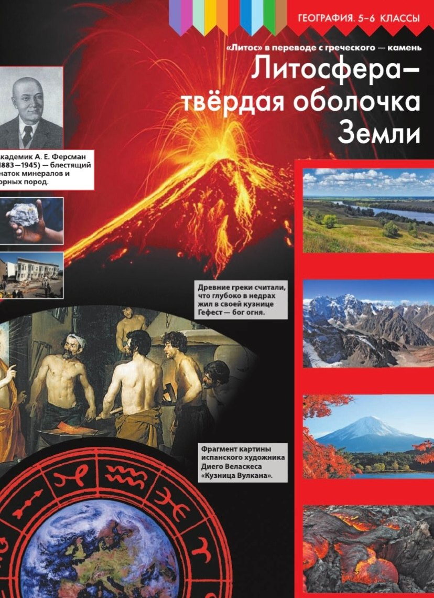
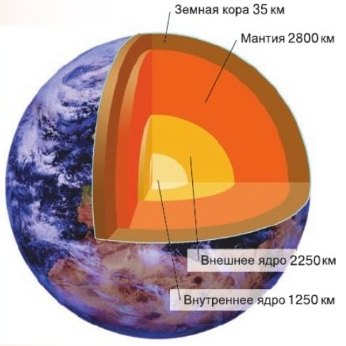
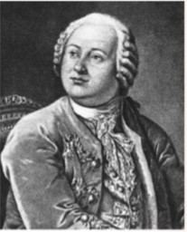
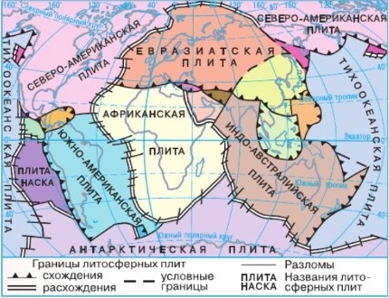

Литосфера — твёрдая оболочка Земли
Горы, равнины, вулканы и камни у нас под ногами — всё это поможет разобраться, как устроена твёрдая оболочка Земли.
На первой странице раздела — академик Александр Ферсман, исследователь минералов и горных пород. Рядом фрагмент картины Диего Веласкеса «Кузница Вулкана». Кузница напоминает о древнегреческом мифе: люди представляли, что глубоко под землёй работает бог огня Гефест.
«Литос» в переводе с греческого — камень.
Академик А. Е. Ферсман (1883—1945) — блестящий знаток минералов и горных пород.
Древние греки считали, что глубоко в недрах жил в своей кузнице Гефест — бог огня.
Фрагмент картины испанского художника Диего Веласкеса «Кузница Вулкана».

1. Почему на одной странице оказались и кузница, и вулкан?
2. С чего геолог мог бы начать знакомство с литосферой дома?
Каково внутреннее строение Земли? Что такое земная кора?
Представь Землю размером с яблоко. Её наружный каменный слой, земная кора, был бы даже тоньше яблочной кожуры.
По современным представлениям, в центре Земли находится металлическое ядро из железа и никеля (рис. 50). Внутренняя часть ядра твёрдая, внешняя — жидкая.
Под корой лежит мантия. Большая часть мантии состоит из горячей твёрдой породы. Эта порода очень медленно меняет форму и перемещается.
В центре Земли находится ядро из железа и никеля. Внешнее ядро жидкое. Внутреннее ядро твёрдое.
Земная кора и жёсткая верхняя часть мантии вместе образуют литосферу.
Температура ядра 6000 °C (как на поверхности Солнца). Далее идёт мантия (от греческого слова мантион — покрывало, плащ). Температура вещества в мантии достигает 2000 °C. Но из-за высокого давления оно не плавится, а находится в особом состоянии, обладая свойствами жидкого и твёрдого тела. Под давлением вещество мантии может медленно перемещаться.
Над мантией располагается твёрдая оболочка Земли — земная кора. Толщина земной коры во много раз меньше среднего радиуса Земли, равного 6371 км. Если сравнить земной шар, например, с яблоком, то земная кора будет даже тоньше, чем его кожура.
Начиная с глубины 20—30 м, температура земной коры увеличивается в среднем на 3 °C на каждые 100 м.
Литосфера включает в себя земную кору с прилегающей твёрдой частью верхней мантии.

▲ Найди самую тонкую оболочку и покажи, где проходит граница между двумя частями ядра.
Под материками кора в среднем около 35 км. Под горными системами — 50–60 км, под Гималаями — около 80 км. В школьной схеме у материковой коры три слоя: осадочный, гранитный и базальтовый.
Под океанами кора обычно 5–10 км. В школьной схеме два слоя: осадочный и базальтовый.
Под материками и океанами земная кора неодинакова. Материковая состоит из трёх слоёв: осадочного, гранитного и базальтового. Мощность её в среднем около 35 км, а под горными системами ещё больше — 50—60 км. А максимальная мощность — под самыми высокими горами — Гималаями (около 80 км).
В океанической земной коре только два слоя: осадочный и базальтовый. Поэтому и мощность её меньше — обычно от 5 до 10 км.
Материковая земная кора толще, чем океаническая. В океанической земной коре нет гранитного слоя.
Земная кора — верхняя часть литосферы. Строение земной коры под материками и океанами неодинаково.
Наружный слой горных пород.
Земная кора вместе с жёсткой верхней частью мантии.
Кора целиком входит в литосферу.
3. Почему каменная оболочка под Гималаями всё равно считается тонкой?
4. Что окажется под корой, если на схеме двигаться вниз? В какой момент мы ещё в литосфере?
Какие проявления внутренних и внешних сил мы видим на земной поверхности?
Михаил Ломоносов (1711–1765) писал, что Земля менялась со временем. Сегодня мы можем объяснить, откуда берутся эти изменения.
Внутренние силы связаны с энергией земных недр. Землетрясение, извержение или выход горячего источника можно заметить сразу. Движение материков, подъём гор и изменение берегов лучше видны на очень длинном отрезке времени.
Внешние силы действуют на поверхности. Солнце нагревает Землю и даёт энергию многим из этих процессов. Река размывает породу и углубляет долину. Ветер переносит песок. Перепады температуры и живые организмы помогают разрушать породы. Люди тоже меняют поверхность, когда роют карьеры и каналы или строят дамбы.
Михаил Васильевич Ломоносов (1711—1765) (рис. 51) в своём знаменитом труде «О слоях земных» писал: «Твёрдо помнить должно, что видимые телесные на земле вещи и весь мир не в таком состоянии были с начала от создания, как ныне находим, но великие происходили в нём перемены...»
Сегодня учёные знают, что есть внешние и внутренние силы, которые приводят в движение все природные процессы. Это энергия, излучаемая Солнцем, и энергия, заключённая в недрах Земли.
Время от времени земные глубины напоминают нам о том, что внутри них что-то происходит. Мы можем видеть, как энергия недр прорывается на поверхность, вызывая землетрясения, извержения вулканов и выход горячих источников. Правда, мы не можем увидеть, как движутся континенты, поднимаются и опускаются огромные участки земной коры, вырастают горы, меняются очертания морских берегов. Такие изменения становятся заметны лишь через сотни и тысячи лет.
Одновременно с внутренними силами работают и внешние силы. Ветер, текучие воды, колебания температур, деятельность растений и животных со временем также изменяют земную поверхность. Горы разрушаются, а обломки пород постепенно измельчаются и перемещаются. Реки вырабатывают свои долины. Ветер переносит мельчайшие частицы, меняя, например, облик песчаных пустынь. Человек — тоже внешняя сила. Люди создают карьеры и шахты, строят дамбы и роют каналы. Неудивительно, что они стремятся как можно лучше изучить и глубины Земли, и глубины космоса.

▲ Прочитай цитату Ломоносова. Какую мысль о Земле он высказал?
Внутренние и внешние силы Земли создают все неровности на её поверхности.
5. Гора поднимается, а ручьи размывают её склон. Могут ли оба процесса идти одновременно?
6. На берегу появился обрыв после землетрясения. В другом месте похожий обрыв замечен рядом с карьером. Достаточно ли внешнего вида, чтобы понять причину?
Из каких крупных блоков состоит литосфера?
Твёрдая оболочка разделена на крупные блоки — литосферные плиты. Они лежат на пластичном слое верхней мантии и движутся со скоростью в несколько сантиметров в год. За сотни миллионов лет путь измеряется уже тысячами километров.
В одних местах плиты расходятся. Расплавленная порода — магма — может подняться и застыть, добавив новую породу. В других местах плиты сближаются: одна может уйти под другую, а породы могут сжаться и подняться.
У восточного края Азии Тихоокеанская плита погружается под соседние плиты. У таких границ происходят землетрясения и извержения. Движение плит также связано с образованием гор.
Литосфера только внешне сплошная. На самом деле она состоит из отдельных жёстких, устойчивых, малоподвижных блоков — литосферных плит (рис. 52). Плиты разъединены разломами. Литосферные плиты лежат на пластичном слое в средней части верхней мантии и «плавают» по нему с очень малой скоростью, всего лишь несколько сантиметров в год. Но за сотни миллионов лет геологической истории Земли они передвинулись на тысячи километров.
По современным представлениям, литосферные плиты в результате активности внутренних сил Земли в одних местах раздвигаются, в других сталкиваются и наползают друг на друга. По разломам в земную кору проникают потоки расплавленного вещества мантии — магмы (от греческого слова магма — тесто, месиво, густая мазь). Магма застывает, и твёрдая оболочка восстанавливается.
Например, вдоль Восточной Азии более плотная Тихоокеанская литосферная плита погружается под другие плиты. Там, где это происходит, мы наблюдаем извержения вулканов и землетрясения. Постепенно слои земной коры сминаются в складки — идёт процесс горообразования.

▲ Найди плиту Наска у западного берега Южной Америки. По легенде определи, сходятся ли плиты здесь.
Литосфера разбита на крупные блоки — литосферные плиты, которые очень медленно перемещаются по пластичному слою мантии.
7. Плита смещается на 3 см в год. Сколько получится за миллион лет, если скорость не изменится?
8. На карте видна цепочка вулканов у края материка. Как проверить, связана ли она с движением плит?
Итоги параграфа
- Найдите на карте горы, протянувшиеся вдоль границ литосферных плит: Гималаи, Альпы, Кордильеры, Анды. Какая карта вам понадобится?
- Дайте определение понятия «литосфера».
- Что называется внутренними силами Земли? Для чего их необходимо изучать?
- Какие процессы происходят под воздействием внешних сил Земли?
- Самую высокую температуру имеет: а) земная кора, б) мантия, в) ядро.
- Установите соответствие.
1) Земная кора. 2) Мантия. 3) Ядро.
А) В переводе на русский язык означает «покрывало». Б) Толщина от 5 до 80 км. В) Основной элемент состава — железо. - В чём заключаются особенности внутренних сфер Земли: а) ядра, б) мантии, в) земной коры?
- Нарисуйте схему внутреннего строения земного шара. Из каких частей он состоит?
- «Земная кора — это…». Продолжите составление статьи для географического словаря. Статья должна содержать определение и существенные характеристики земной коры. Обсудите результаты в группе и отметьте лучшие.
Проверь себя
Извергается вулкан
Расплав поднимается из глубины.
Река углубляет долину
Текучая вода выносит обломки.
Плиты сближаются
Движение плит связано с процессами в недрах Земли.
Ветер переносит песок
Так меняется форма песчаных холмов.
Экскаватор расширяет карьер
Здесь рельеф меняют люди.
Обычно 5–10 км
Такова обычная толщина коры под океанами.
В среднем около 35 км
Под горами такая кора бывает ещё толще.
Есть гранитный слой в школьной схеме
В школьной схеме под океаном всего два слоя.
1. Что входит в литосферу?
2. Какая часть ядра жидкая?
3. Где кора обычно тоньше?
4. Где видно действие внешних сил?
5. С какой скоростью движутся литосферные плиты?
6. Что может произойти там, где плиты расходятся?
Расскажи вслух
От поверхности до центра
- Назови три главные части Земли.
- Сравни две части ядра.
- Покажи, что входит в литосферу.
Кора под материком и океаном
- Назови обычную толщину каждого типа.
- Сравни слои по схеме.
- Объясни, где кора самая толстая.
Как меняется рельеф
- Назови источник внутренних сил.
- Приведи пример работы воды или ветра.
- Покажи, как обе силы меняют одну гору.
Что происходит на границах плит
- Объясни, из чего состоит плита.
- Покажи схождение и расхождение.
- Расскажи, как магма может образовать новую породу.